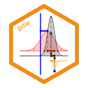

An opinionated set of defaults for plots
Source:R/import-standalone-ggplot-utils.R
dot-gg_pedantic.RdThis is a set of styles with a focus on making plots compact, and minimally
fussy, and ensuring fonts are consistent between axes and labels. It sets
default sizes for line widths and point sizes. It also
switched the default png renderer in knitr to ragg::ragg_png to allow for
modern font support.
Arguments
- lineSize
the default line and shape size in ggplot units (default
`0.25`[numeric])- fontSize
the base font size (default
`8`[numeric])- font
the default font name. (default
`Roboto`[character])- size
the size of points (the default size aesthetic) (default
`lineSize * 2`)- ...
Additional named arguments passed on to
ggplot2::theme...additional element specifications not part of base ggplot2. In general, these should also be defined in the element tree argument. Splicing a list is also supported.
lineall line elements (element_line())
rectall rectangular elements (element_rect())
textall text elements (element_text())
titleall title elements: plot, axes, legends (element_text(); inherits from text)
pointall point elements (element_point())
polygonall polygon elements (element_polygon())
geomdefaults for geoms (element_geom())
spacingall spacings (unit())
marginsall margins (margin())
aspect.ratioaspect ratio of the panel
axis.title,axis.title.x,axis.title.y,axis.title.x.top,axis.title.x.bottom,axis.title.y.left,axis.title.y.rightlabels of axes (element_text()). Specify all axes' labels (axis.title), labels by plane (using axis.title.x or axis.title.y), or individually for each axis (using axis.title.x.bottom, axis.title.x.top, axis.title.y.left, axis.title.y.right). axis.title.*.* inherits from axis.title.* which inherits from axis.title, which in turn inherits from text
axis.text,axis.text.x,axis.text.y,axis.text.x.top,axis.text.x.bottom,axis.text.y.left,axis.text.y.right,axis.text.theta,axis.text.rtick labels along axes (element_text()). Specify all axis tick labels (axis.text), tick labels by plane (using axis.text.x or axis.text.y), or individually for each axis (using axis.text.x.bottom, axis.text.x.top, axis.text.y.left, axis.text.y.right). axis.text.*.* inherits from axis.text.* which inherits from axis.text, which in turn inherits from text
axis.ticks,axis.ticks.x,axis.ticks.x.top,axis.ticks.x.bottom,axis.ticks.y,axis.ticks.y.left,axis.ticks.y.right,axis.ticks.theta,axis.ticks.rtick marks along axes (element_line()). Specify all tick marks (axis.ticks), ticks by plane (using axis.ticks.x or axis.ticks.y), or individually for each axis (using axis.ticks.x.bottom, axis.ticks.x.top, axis.ticks.y.left, axis.ticks.y.right). axis.ticks.*.* inherits from axis.ticks.* which inherits from axis.ticks, which in turn inherits from line
axis.minor.ticks.x.top,axis.minor.ticks.x.bottom,axis.minor.ticks.y.left,axis.minor.ticks.y.right,axis.minor.ticks.theta,axis.minor.ticks.rminor tick marks along axes (element_line()). axis.minor.ticks.*.* inherit from the corresponding major ticks axis.ticks.*.*.
axis.ticks.length,axis.ticks.length.x,axis.ticks.length.x.top,axis.ticks.length.x.bottom,axis.ticks.length.y,axis.ticks.length.y.left,axis.ticks.length.y.right,axis.ticks.length.theta,axis.ticks.length.rlength of tick marks (unit). axis.ticks.length inherits from spacing.
axis.minor.ticks.length,axis.minor.ticks.length.x,axis.minor.ticks.length.x.top,axis.minor.ticks.length.x.bottom,axis.minor.ticks.length.y,axis.minor.ticks.length.y.left,axis.minor.ticks.length.y.right,axis.minor.ticks.length.theta,axis.minor.ticks.length.rlength of minor tick marks (unit), or relative to axis.ticks.length when provided with rel().
axis.line,axis.line.x,axis.line.x.top,axis.line.x.bottom,axis.line.y,axis.line.y.left,axis.line.y.right,axis.line.theta,axis.line.rlines along axes (element_line()). Specify lines along all axes (axis.line), lines for each plane (using axis.line.x or axis.line.y), or individually for each axis (using axis.line.x.bottom, axis.line.x.top, axis.line.y.left, axis.line.y.right). axis.line.*.* inherits from axis.line.* which inherits from axis.line, which in turn inherits from line
legend.backgroundbackground of legend (element_rect(); inherits from rect)
legend.marginthe margin around each legend (margin()); inherits from margins.
legend.spacing,legend.spacing.x,legend.spacing.ythe spacing between legends (unit). legend.spacing.x & legend.spacing.y inherit from legend.spacing or can be specified separately. legend.spacing inherits from spacing.
legend.keybackground underneath legend keys (element_rect(); inherits from rect)
legend.key.size,legend.key.height,legend.key.widthsize of legend keys (unit); key background height & width inherit from legend.key.size or can be specified separately. In turn legend.key.size inherits from spacing.
legend.key.spacing,legend.key.spacing.x,legend.key.spacing.yspacing between legend keys given as a unit. Spacing in the horizontal (x) and vertical (y) direction inherit from legend.key.spacing or can be specified separately. legend.key.spacing inherits from spacing.
legend.key.justificationJustification for positioning legend keys when more space is available than needed for display. The default, NULL, stretches keys into the available space. Can be a location like "center" or "top", or a two-element numeric vector.
legend.frameframe drawn around the bar (element_rect()).
legend.tickstick marks shown along bars or axes (element_line())
legend.ticks.lengthlength of tick marks in legend (unit()); inherits from legend.key.size.
legend.axis.linelines along axes in legends (element_line())
legend.textlegend item labels (element_text(); inherits from text)
legend.text.positionplacement of legend text relative to legend keys or bars ("top", "right", "bottom" or "left"). The legend text placement might be incompatible with the legend's direction for some guides.
legend.titletitle of legend (element_text(); inherits from title)
legend.title.positionplacement of legend title relative to the main legend ("top", "right", "bottom" or "left").
legend.positionthe default position of legends ("none", "left", "right", "bottom", "top", "inside")
legend.position.insideA numeric vector of length two setting the placement of legends that have the "inside" position.
legend.directionlayout of items in legends ("horizontal" or "vertical")
legend.byrowwhether the legend-matrix is filled by columns (FALSE, the default) or by rows (TRUE).
legend.justificationanchor point for positioning legend inside plot ("center" or two-element numeric vector) or the justification according to the plot area when positioned outside the plot
legend.justification.top,legend.justification.bottom,legend.justification.left,legend.justification.right,legend.justification.insideSame as legend.justification but specified per legend.position option.
legend.locationRelative placement of legends outside the plot as a string. Can be "panel" (default) to align legends to the panels or "plot" to align legends to the plot as a whole.
legend.boxarrangement of multiple legends ("horizontal" or "vertical")
legend.box.justjustification of each legend within the overall bounding box, when there are multiple legends ("top", "bottom", "left", "right", "center" or "centre")
legend.box.marginmargins around the full legend area, as specified using margin(); inherits from margins.
legend.box.backgroundbackground of legend area (element_rect(); inherits from rect)
legend.box.spacingThe spacing between the plotting area and the legend box (unit); inherits from spacing.
panel.backgroundbackground of plotting area, drawn underneath plot (element_rect(); inherits from rect)
panel.borderborder around plotting area, drawn on top of plot so that it covers tick marks and grid lines. This should be used with fill = NA (element_rect(); inherits from rect)
panel.spacing,panel.spacing.x,panel.spacing.yspacing between facet panels (unit). panel.spacing.x & panel.spacing.y inherit from panel.spacing or can be specified separately. panel.spacing inherits from spacing.
panel.grid,panel.grid.major,panel.grid.minor,panel.grid.major.x,panel.grid.major.y,panel.grid.minor.x,panel.grid.minor.ygrid lines (element_line()). Specify major grid lines, or minor grid lines separately (using panel.grid.major or panel.grid.minor) or individually for each axis (using panel.grid.major.x, panel.grid.minor.x, panel.grid.major.y, panel.grid.minor.y). Y axis grid lines are horizontal and x axis grid lines are vertical. panel.grid.*.* inherits from panel.grid.* which inherits from panel.grid, which in turn inherits from line
panel.ontopoption to place the panel (background, gridlines) over the data layers (logical). Usually used with a transparent or blank panel.background.
panel.widths,panel.heightsSizes for panels (units). Can be a single unit to set the total size for the panel area, or a unit vector to set the size of individual panels. Using this setting overrides the aspect ratio set by the theme, coord or facets. An exception is made when the plot has a single panel and exactly one of the width or height is set, in which case an attempt is made to preserve the aspect ratio.
plot.backgroundbackground of the entire plot (element_rect(); inherits from rect)
plot.titleplot title (text appearance) (element_text(); inherits from title) left-aligned by default
plot.title.position,plot.caption.positionAlignment of the plot title/subtitle and caption. The setting for plot.title.position applies to both the title and the subtitle. A value of "panel" (the default) means that titles and/or caption are aligned to the plot panels. A value of "plot" means that titles and/or caption are aligned to the entire plot (minus any space for margins and plot tag).
plot.subtitleplot subtitle (text appearance) (element_text(); inherits from title) left-aligned by default
plot.captioncaption below the plot (text appearance) (element_text(); inherits from title) right-aligned by default
plot.tagupper-left label to identify a plot (text appearance) (element_text(); inherits from title) left-aligned by default
plot.tag.positionThe position of the tag as a string ("topleft", "top", "topright", "left", "right", "bottomleft", "bottom", "bottomright") or a coordinate. If a coordinate, can be a numeric vector of length 2 to set the x,y-coordinate relative to the whole plot. The coordinate option is unavailable for plot.tag.location = "margin".
plot.tag.locationThe placement of the tag as a string, one of "panel", "plot" or "margin". Respectively, these will place the tag inside the panel space, anywhere in the plot as a whole, or in the margin around the panel space.
plot.marginmargin around entire plot (unit with the sizes of the top, right, bottom, and left margins); inherits from margin.
strip.background,strip.background.x,strip.background.ybackground of facet labels (element_rect(); inherits from rect). Horizontal facet background (strip.background.x) & vertical facet background (strip.background.y) inherit from strip.background or can be specified separately
strip.clipshould strip background edges and strip labels be clipped to the extend of the strip background? Options are "on" to clip, "off" to disable clipping or "inherit" (default) to take the clipping setting from the parent viewport.
strip.placementplacement of strip with respect to axes, either "inside" or "outside". Only important when axes and strips are on the same side of the plot.
strip.text,strip.text.x,strip.text.y,strip.text.x.top,strip.text.x.bottom,strip.text.y.left,strip.text.y.rightfacet labels (element_text(); inherits from text). Horizontal facet labels (strip.text.x) & vertical facet labels (strip.text.y) inherit from strip.text or can be specified separately. Facet strips have dedicated position-dependent theme elements (strip.text.x.top, strip.text.x.bottom, strip.text.y.left, strip.text.y.right) that inherit from strip.text.x and strip.text.y, respectively. As a consequence, some theme stylings need to be applied to the position-dependent elements rather than to the parent elements
strip.switch.pad.grid,strip.switch.pad.wrapspace between strips and axes when strips are switched (unit); inherits from spacing.
completeset this to TRUE if this is a complete theme, such as the one returned by theme_grey(). Complete themes behave differently when added to a ggplot object. Also, when setting complete = TRUE all elements will be set to inherit from blank elements.
validateTRUE to run check_element(), FALSE to bypass checks.